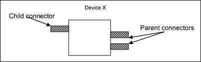

5.7.3.2. Devices¶
Devices represent, strictly speaking, hardware units that are relevant for the controller configuration. They may be programmable devices (PLC), local I/O units, extension modules, field bus nodes, or bus coupler modules. In a wider sense the term may also include functional hardware units that are selectable or configurable by the user but have no direct hardware equivalent. Unless otherwise specified, in the following sections the term device is used in this wider sense. With regard to the device description and the interface both aspects are also treated equally.
Devices may be linked hierarchically. The possible combinations are defined in the respective description files. The link points of the devices are referred to as Connectors. Connectors can either take a Parent role or a Child role. Depending on the configuration, between 1 and n devices with suitable child connectors can be attached to Parent connectors.
In diagrams the following symbols are used for illustration purposes: a device is represented by a large rectangle. Smaller rectangles to the left of the device indicate child connectors, i.e. points where the device can be attached to a parent node. The same type of rectangle on the right-hand side represents parent connectors, i.e. possible connection points for children.
